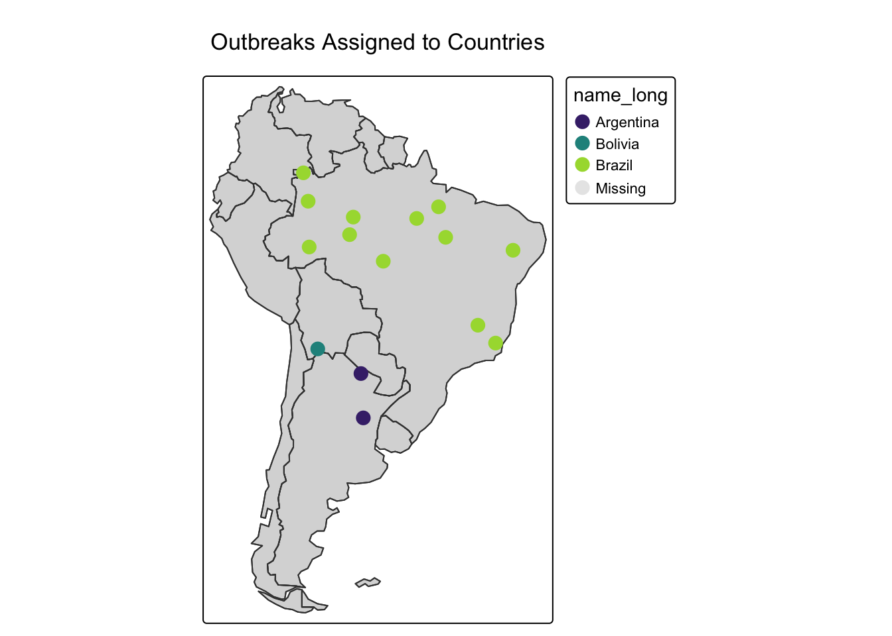
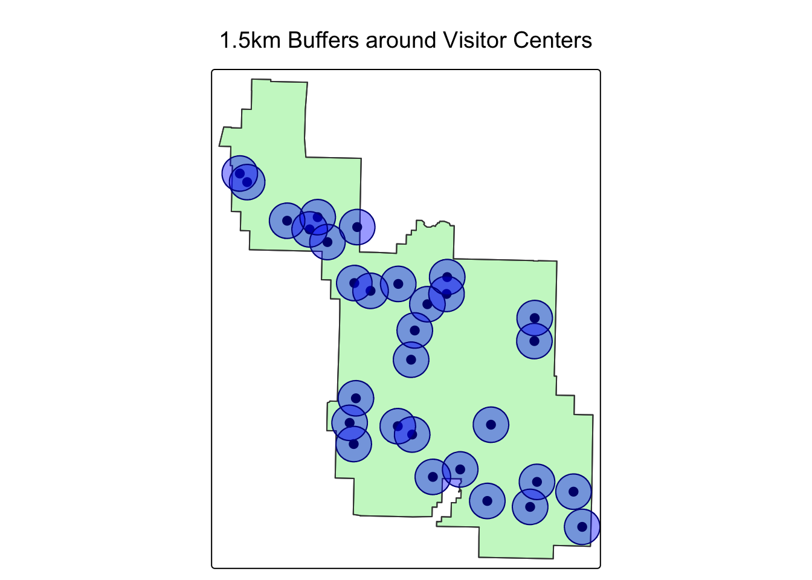
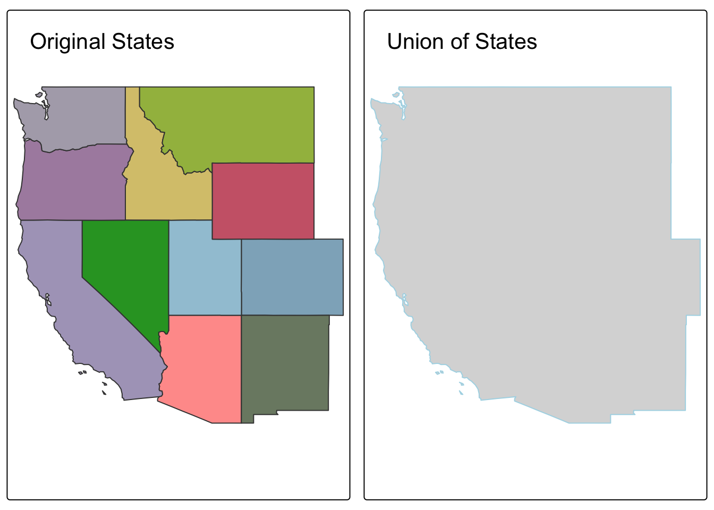
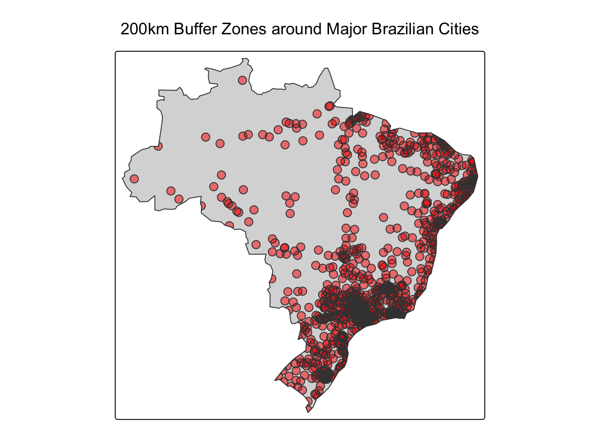
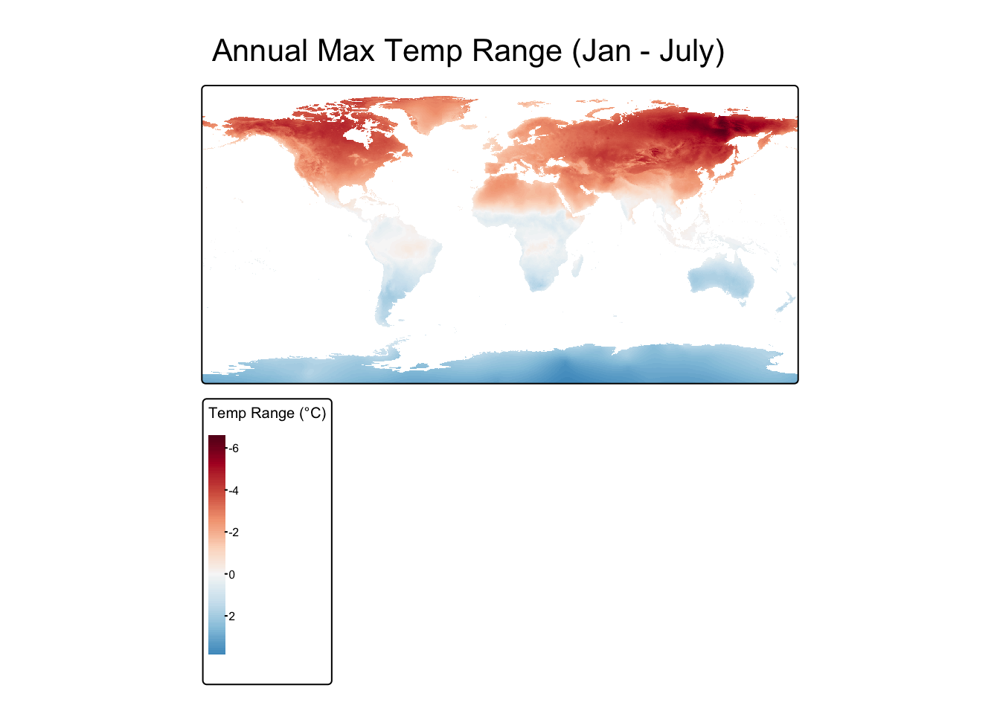
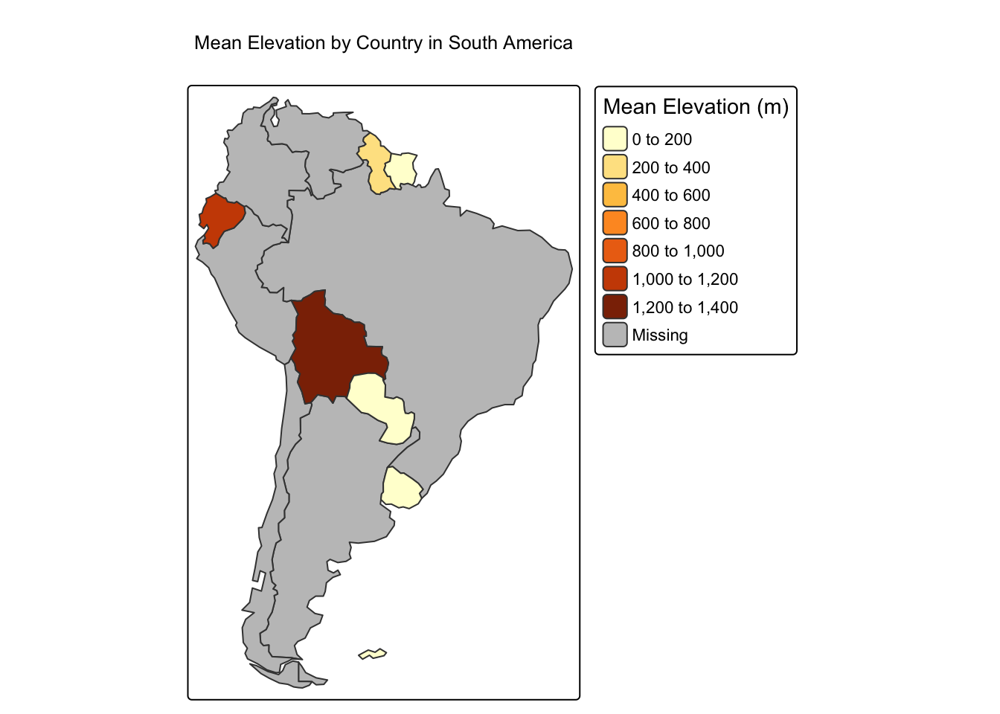

Show/Hide Code
# Core Packages
library(sf)
library(terra)
library(tmap)
library(dplyr)
# Data Packages
library(maps)
library(spData)
library(spDataLarge)
library(geodata)A Structured Coursebook
In Module 1, we mastered the essentials: loading, inspecting, and creating basic visualizations of vector and raster data. Now, we move beyond displaying data to truly analyzing it by exploring the relationships between different spatial datasets.
This module covers the core data wrangling operations that are the workhorses of any real-world geospatial analysis. These techniques are what allow an epidemiologist to connect different pieces of the puzzle—for example, linking patient cases to the environmental characteristics of their local area, or calculating the population within a certain distance of a health facility.
By the end of this notebook, you will be able to: 1. Combine vector datasets based on their spatial location using Spatial Joins. 2. Create areas of interest around features using Buffering. 3. Perform powerful geometric operations like Intersection and Union. 4. Handle multi-layered raster data and perform Raster Calculations (Map Algebra). 5. Link raster and vector data by calculating Zonal Statistics, a cornerstone of environmental epidemiology. 6. Confidently manage and transform Coordinate Reference Systems (CRS).
As before, we begin by loading the packages we need for our session.
sfA spatial join is similar to a regular dplyr::left_join(), but instead of joining two tables based on a common ID column, it joins them based on their spatial relationship. This is an incredibly powerful tool for enriching your data.
Worked Example: Assigning Points to Polygons
Imagine we have a dataset of GPS coordinates for several disease outbreak locations, and we want to know which country each outbreak is in.
# First, let's get our polygon layer from the world dataset
data(world) # Make sure world data is loaded
sa_countries <- world %>%
filter(continent == "South America")
# Next, let's create a dummy sf object of outbreak points.
set.seed(2024) # for reproducibility
outbreak_points <- st_sample(sa_countries, size = 15) %>%
st_as_sf() %>% # Convert the sfc_POINT object to an sf data frame
mutate(outbreak_id = 1:15) # Add an ID for each outbreak
# Perform the spatial join
points_with_country_data <- st_join(outbreak_points, sa_countries)
# Let's look at the result
print(points_with_country_data)Simple feature collection with 15 features and 11 fields
Geometry type: POINT
Dimension: XY
Bounding box: xmin: -68.42411 ymin: -30.40425 xmax: -39.3102 ymax: 1.299283
Geodetic CRS: WGS 84
First 10 features:
outbreak_id iso_a2 name_long continent region_un subregion
1 1 BO Bolivia South America Americas South America
2 2 BR Brazil South America Americas South America
3 3 BR Brazil South America Americas South America
4 4 BR Brazil South America Americas South America
5 5 BR Brazil South America Americas South America
6 6 AR Argentina South America Americas South America
7 7 BR Brazil South America Americas South America
8 8 BR Brazil South America Americas South America
9 9 BR Brazil South America Americas South America
10 10 BR Brazil South America Americas South America
type area_km2 pop lifeExp gdpPercap
1 Sovereign country 1085270 10562159 68.357 6324.827
2 Sovereign country 8508557 204213133 75.042 15374.262
3 Sovereign country 8508557 204213133 75.042 15374.262
4 Sovereign country 8508557 204213133 75.042 15374.262
5 Sovereign country 8508557 204213133 75.042 15374.262
6 Sovereign country 2784469 42981515 76.252 18797.548
7 Sovereign country 8508557 204213133 75.042 15374.262
8 Sovereign country 8508557 204213133 75.042 15374.262
9 Sovereign country 8508557 204213133 75.042 15374.262
10 Sovereign country 8508557 204213133 75.042 15374.262
x
1 POINT (-66.43254 -21.48096)
2 POINT (-48.66798 -7.045351)
3 POINT (-62.00516 -6.69752)
4 POINT (-39.3102 -8.718425)
5 POINT (-57.33359 -10.13765)
6 POINT (-60.42989 -24.66893)
7 POINT (-67.62014 -8.297282)
8 POINT (-49.64755 -3.098395)
9 POINT (-41.73221 -20.72512)
10 POINT (-44.18993 -18.4131)
Buffering creates a new polygon around a spatial feature at a specified distance. This is useful for modeling zones of influence or potential exposure.
Important: Buffering requires a projected CRS for distances to be meaningful (e.g., in meters).
Worked Example: Buffering Health Facilities
Let’s use the zion dataset from spData. We can pretend the visitor centers are health clinics.
# Load Zion National Park data
zion_gpkg_path <- system.file("vector/zion_points.gpkg", package = "spDataLarge")
zion_boundary_gpkg_path <- system.file("vector/zion.gpkg", package = "spDataLarge")
zion_boundary <- sf::read_sf(zion_boundary_gpkg_path)
zion_points <- sf::read_sf(zion_gpkg_path)
# First, CHECK THE CRS! The units are meters. Perfect for buffering!
st_crs(zion_points)Coordinate Reference System:
User input: WGS 84
wkt:
GEOGCRS["WGS 84",
ENSEMBLE["World Geodetic System 1984 ensemble",
MEMBER["World Geodetic System 1984 (Transit)"],
MEMBER["World Geodetic System 1984 (G730)"],
MEMBER["World Geodetic System 1984 (G873)"],
MEMBER["World Geodetic System 1984 (G1150)"],
MEMBER["World Geodetic System 1984 (G1674)"],
MEMBER["World Geodetic System 1984 (G1762)"],
MEMBER["World Geodetic System 1984 (G2139)"],
MEMBER["World Geodetic System 1984 (G2296)"],
ELLIPSOID["WGS 84",6378137,298.257223563,
LENGTHUNIT["metre",1]],
ENSEMBLEACCURACY[2.0]],
PRIMEM["Greenwich",0,
ANGLEUNIT["degree",0.0174532925199433]],
CS[ellipsoidal,2],
AXIS["geodetic latitude (Lat)",north,
ORDER[1],
ANGLEUNIT["degree",0.0174532925199433]],
AXIS["geodetic longitude (Lon)",east,
ORDER[2],
ANGLEUNIT["degree",0.0174532925199433]],
USAGE[
SCOPE["Horizontal component of 3D system."],
AREA["World."],
BBOX[-90,-180,90,180]],
ID["EPSG",4326]]Coordinate Reference System:
User input: EPSG:32612
wkt:
PROJCRS["WGS 84 / UTM zone 12N",
BASEGEOGCRS["WGS 84",
ENSEMBLE["World Geodetic System 1984 ensemble",
MEMBER["World Geodetic System 1984 (Transit)"],
MEMBER["World Geodetic System 1984 (G730)"],
MEMBER["World Geodetic System 1984 (G873)"],
MEMBER["World Geodetic System 1984 (G1150)"],
MEMBER["World Geodetic System 1984 (G1674)"],
MEMBER["World Geodetic System 1984 (G1762)"],
MEMBER["World Geodetic System 1984 (G2139)"],
MEMBER["World Geodetic System 1984 (G2296)"],
ELLIPSOID["WGS 84",6378137,298.257223563,
LENGTHUNIT["metre",1]],
ENSEMBLEACCURACY[2.0]],
PRIMEM["Greenwich",0,
ANGLEUNIT["degree",0.0174532925199433]],
ID["EPSG",4326]],
CONVERSION["UTM zone 12N",
METHOD["Transverse Mercator",
ID["EPSG",9807]],
PARAMETER["Latitude of natural origin",0,
ANGLEUNIT["degree",0.0174532925199433],
ID["EPSG",8801]],
PARAMETER["Longitude of natural origin",-111,
ANGLEUNIT["degree",0.0174532925199433],
ID["EPSG",8802]],
PARAMETER["Scale factor at natural origin",0.9996,
SCALEUNIT["unity",1],
ID["EPSG",8805]],
PARAMETER["False easting",500000,
LENGTHUNIT["metre",1],
ID["EPSG",8806]],
PARAMETER["False northing",0,
LENGTHUNIT["metre",1],
ID["EPSG",8807]]],
CS[Cartesian,2],
AXIS["(E)",east,
ORDER[1],
LENGTHUNIT["metre",1]],
AXIS["(N)",north,
ORDER[2],
LENGTHUNIT["metre",1]],
USAGE[
SCOPE["Navigation and medium accuracy spatial referencing."],
AREA["Between 114°W and 108°W, northern hemisphere between equator and 84°N, onshore and offshore. Canada - Alberta; Northwest Territories (NWT); Nunavut; Saskatchewan. Mexico. United States (USA)."],
BBOX[0,-114,84,-108]],
ID["EPSG",32612]]# Let's create a 1.5 kilometer (1500 meter) buffer around these points
visitor_center_buffers <- st_buffer(zion_points, dist = 1500)
# Let's map the park boundary, the points, and their buffers
tm_shape(zion_boundary) + tm_polygons(col="lightgreen", alpha=0.5) + tm_borders() +
tm_shape(zion_points) + tm_dots(col="red", size=0.5) +
tm_shape(visitor_center_buffers) + tm_polygons(col="blue", alpha=0.4, border.col = "darkblue") +
tm_layout(main.title = "1.5km Buffers around Visitor Centers")
The sf package allows for powerful geometric operations. The two most common are st_intersection() (finding common area) and st_union() (dissolving boundaries).
Worked Example (Union): Creating a Single Regional Polygon
# Get the western states from Module 1
data("us_states")
western_states <- us_states %>% filter(REGION == "West")
# Dissolve all the internal boundaries into a single feature
west_region_boundary <- st_union(western_states)
# Plot the original states and the single dissolved boundary
plot1 <- tm_shape(western_states) + tm_polygons("NAME", legend.show = FALSE) + tm_layout(title="Original States")
plot2 <- tm_shape(west_region_boundary) + tm_polygons(col="lightblue") + tm_layout(title="Union of States")
tmap_arrange(plot1, plot2)
Let’s practice by finding major cities in Brazil and analyzing their proximity.
Load the world.cities dataset from spData. Spatially join it with the world dataset to get the country name for each city. Then, filter to create a new sf object called brazil_cities that contains only cities in Brazil.
# Re-create all necessary objects from previous tasks
data("world.cities")
data("world")
world_cities_sf <- st_as_sf(world.cities, coords = c("long", "lat"), crs = 4326)
cities_in_countries <- st_join(world_cities_sf, world)
brazil_cities <- cities_in_countries %>% filter(country.etc == "Brazil")
head(brazil_cities)Simple feature collection with 6 features and 14 fields
Geometry type: POINT
Dimension: XY
Bounding box: xmin: -48.89 ymin: -7.95 xmax: -34.88 ymax: -1.72
Geodetic CRS: WGS 84
name country.etc pop.x capital iso_a2 name_long continent
1 Abaetetuba Brazil 79660 0 BR Brazil South America
2 Abreu e Lima Brazil 82765 0 BR Brazil South America
3 Acailandia Brazil 93252 0 BR Brazil South America
4 Acarau Brazil 29169 0 BR Brazil South America
5 Acopiara Brazil 24942 0 BR Brazil South America
6 Acu Brazil 36421 0 BR Brazil South America
region_un subregion type area_km2 pop.y lifeExp
1 Americas South America Sovereign country 8508557 204213133 75.042
2 Americas South America Sovereign country 8508557 204213133 75.042
3 Americas South America Sovereign country 8508557 204213133 75.042
4 Americas South America Sovereign country 8508557 204213133 75.042
5 Americas South America Sovereign country 8508557 204213133 75.042
6 Americas South America Sovereign country 8508557 204213133 75.042
gdpPercap geometry
1 15374.26 POINT (-48.89 -1.72)
2 15374.26 POINT (-34.88 -7.95)
3 15374.26 POINT (-47.54 -5.06)
4 15374.26 POINT (-40.12 -2.89)
5 15374.26 POINT (-39.46 -6.1)
6 15374.26 POINT (-36.91 -5.58)The CRS of brazil_cities is WGS84 (geographic). To create meaningful buffers, transform it to a projected CRS suitable for Brazil. A good one is SIRGAS 2000 / Brazil Polyconic (EPSG:5880). Then, create a 50km (50,000 meter) buffer around each city.
# Re-create all necessary objects from previous tasks
data("world.cities")
data("world")
world_cities_sf <- st_as_sf(world.cities, coords = c("long", "lat"), crs = 4326)
cities_in_countries <- st_join(world_cities_sf, world)
brazil_cities <- cities_in_countries %>% filter(country.etc == "Brazil")
# Task
brazil_cities_proj <- st_transform(brazil_cities, "EPSG:5880")
city_buffers_proj <- st_buffer(brazil_cities_proj, dist = 50000)
head(city_buffers_proj)Simple feature collection with 6 features and 14 fields
Geometry type: POLYGON
Dimension: XY
Bounding box: xmin: 5518587 ymin: 9022237 xmax: 7157359 ymax: 9859051
Projected CRS: SIRGAS 2000 / Brazil Polyconic
name country.etc pop.x capital iso_a2 name_long continent
1 Abaetetuba Brazil 79660 0 BR Brazil South America
2 Abreu e Lima Brazil 82765 0 BR Brazil South America
3 Acailandia Brazil 93252 0 BR Brazil South America
4 Acarau Brazil 29169 0 BR Brazil South America
5 Acopiara Brazil 24942 0 BR Brazil South America
6 Acu Brazil 36421 0 BR Brazil South America
region_un subregion type area_km2 pop.y lifeExp
1 Americas South America Sovereign country 8508557 204213133 75.042
2 Americas South America Sovereign country 8508557 204213133 75.042
3 Americas South America Sovereign country 8508557 204213133 75.042
4 Americas South America Sovereign country 8508557 204213133 75.042
5 Americas South America Sovereign country 8508557 204213133 75.042
6 Americas South America Sovereign country 8508557 204213133 75.042
gdpPercap geometry
1 15374.26 POLYGON ((5618587 9809051, ...
2 15374.26 POLYGON ((7157359 9072237, ...
3 15374.26 POLYGON ((5766328 9436918, ...
4 15374.26 POLYGON ((6593124 9671014, ...
5 15374.26 POLYGON ((6659287 9303771, ...
6 15374.26 POLYGON ((6943230 9355519, ...The buffers might extend beyond Brazil’s land border. Get the polygon for Brazil from the world dataset, transform it to the same projected CRS (EPSG:5880), and then find the intersection of your buffers and the country’s polygon.
# Re-create all necessary objects from previous tasks
data("world.cities")
data("world")
world_cities_sf <- st_as_sf(world.cities, coords = c("long", "lat"), crs = 4326)
cities_in_countries <- st_join(world_cities_sf, world)
brazil_cities <- cities_in_countries %>% filter(country.etc == "Brazil")
brazil_cities_proj <- st_transform(brazil_cities, "EPSG:5880")
city_buffers_proj <- st_buffer(brazil_cities_proj, dist = 50000)
# Task
brazil_poly_proj <- world %>%
filter(name_long == "Brazil") %>%
st_transform("EPSG:5880")
city_buffers_intersect <- st_intersection(city_buffers_proj, brazil_poly_proj)
head(city_buffers_intersect)Simple feature collection with 6 features and 24 fields
Geometry type: POLYGON
Dimension: XY
Bounding box: xmin: 5518587 ymin: 9023997 xmax: 7120924 ymax: 9859051
Projected CRS: SIRGAS 2000 / Brazil Polyconic
name country.etc pop.x capital iso_a2 name_long continent
1 Abaetetuba Brazil 79660 0 BR Brazil South America
2 Abreu e Lima Brazil 82765 0 BR Brazil South America
3 Acailandia Brazil 93252 0 BR Brazil South America
4 Acarau Brazil 29169 0 BR Brazil South America
5 Acopiara Brazil 24942 0 BR Brazil South America
6 Acu Brazil 36421 0 BR Brazil South America
region_un subregion type area_km2 pop.y lifeExp
1 Americas South America Sovereign country 8508557 204213133 75.042
2 Americas South America Sovereign country 8508557 204213133 75.042
3 Americas South America Sovereign country 8508557 204213133 75.042
4 Americas South America Sovereign country 8508557 204213133 75.042
5 Americas South America Sovereign country 8508557 204213133 75.042
6 Americas South America Sovereign country 8508557 204213133 75.042
gdpPercap iso_a2.1 name_long.1 continent.1 region_un.1 subregion.1
1 15374.26 BR Brazil South America Americas South America
2 15374.26 BR Brazil South America Americas South America
3 15374.26 BR Brazil South America Americas South America
4 15374.26 BR Brazil South America Americas South America
5 15374.26 BR Brazil South America Americas South America
6 15374.26 BR Brazil South America Americas South America
type.1 area_km2.1 pop lifeExp.1 gdpPercap.1
1 Sovereign country 8508557 204213133 75.042 15374.26
2 Sovereign country 8508557 204213133 75.042 15374.26
3 Sovereign country 8508557 204213133 75.042 15374.26
4 Sovereign country 8508557 204213133 75.042 15374.26
5 Sovereign country 8508557 204213133 75.042 15374.26
6 Sovereign country 8508557 204213133 75.042 15374.26
geometry
1 POLYGON ((5618519 9806434, ...
2 POLYGON ((7091908 9024684, ...
3 POLYGON ((5766260 9434301, ...
4 POLYGON ((6589803 9653095, ...
5 POLYGON ((6659218 9301155, ...
6 POLYGON ((6943161 9352903, ...Create a map showing the final intersected buffers on top of the Brazil polygon.
data("world.cities")
data("world")
world_cities_sf <- st_as_sf(world.cities, coords = c("long", "lat"), crs = 4326)
cities_in_countries <- st_join(world_cities_sf, world)
brazil_cities <- cities_in_countries %>% filter(country.etc == "Brazil")
brazil_cities_proj <- st_transform(brazil_cities, "EPSG:5880")
city_buffers_proj <- st_buffer(brazil_cities_proj, dist = 50000)
brazil_poly_proj <- world %>%
filter(name_long == "Brazil") %>%
st_transform("EPSG:5880")
city_buffers_intersect <- st_intersection(city_buffers_proj, brazil_poly_proj)
# Create the map
tm_shape(brazil_poly_proj) + tm_polygons() +
tm_shape(city_buffers_intersect) + tm_polygons(col="red", alpha=0.5) +
tm_layout(main.title = "200km Buffer Zones around Major Brazilian Cities")
terraMap algebra is the process of performing calculations on one or more raster layers. With terra, this is as simple as using standard R arithmetic operators.
Worked Example: Calculating Temperature Range
# Load the data and calculate the annual mean in Celsius
temp_path <- tempdir()
global_tmax <- geodata::worldclim_global(var = "tmax", res = 10, path = temp_path) / 10
# Access individual layers (months) using [[...]]
jan_tmax <- global_tmax[[1]]
jul_tmax <- global_tmax[[7]]
# Perform the calculation
annual_range <- jan_tmax - jul_tmax
# Rename the layer for the plot legend
names(annual_range) <- "Temp Range (°C)"
# Plot the result
tm_shape(annual_range) + tm_raster(palette="RdBu", style="cont") +
tm_layout(main.title = "Annual Max Temp Range (Jan - July)")
This is arguably one of the most important techniques for environmental epidemiology. It involves summarizing raster values within zones defined by vector polygons (e.g., calculating mean NDVI per administrative district).
Worked Example: Mean Elevation per Country in South America
# 1. Get the polygon data (zones)
sa_countries <- world %>%
filter(continent == "South America")
# 2. Get the raster data (values)
# We will download a coarse global elevation raster
temp_path <- tempdir() # Ensure temp_path is defined
elevation <- geodata::worldclim_global(var = "elev", res = 10, path = temp_path)
# 3. Perform the zonal extraction
mean_elev <- terra::extract(elevation, sa_countries, fun = "mean", ID = FALSE)
# 4. Combine the results with the polygon data
sa_countries_with_elev <- cbind(sa_countries, mean_elev)
# 5. Map the result
tm_shape(sa_countries_with_elev) +
tm_polygons(col = "wc2.1_10m_elev",
title = "Mean Elevation (m)",
palette = "YlOrBr") +
tm_layout(main.title = "Mean Elevation by Country in South America")
In this module, we moved from basic data handling to the fundamental analytical operations that underpin geospatial analysis. You learned how to integrate different datasets using spatial joins, model areas of influence with buffers, and perform powerful geometric operations and raster calculations.
Most importantly, you learned how to bridge the vector-raster divide using zonal statistics, a technique that is absolutely critical for combining environmental data with administrative or health data.
With these skills, you are now equipped to perform complex data preparation tasks. In the next module, we will focus specifically on acquiring and processing remote sensing data, such as NDVI and LST.